PT2 – český jazykový balíček
Aktuální upravený firmware, QEMU emery. Podrobnosti a omezení v README.md.
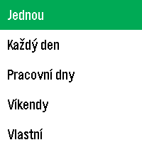
alarm-repeat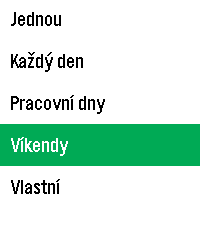
alarm-repeat-lower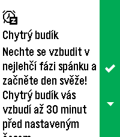
alarmsbackground-settings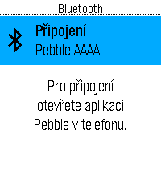
bluetooth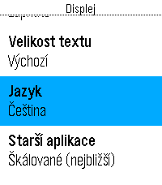
display-language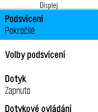
display-settings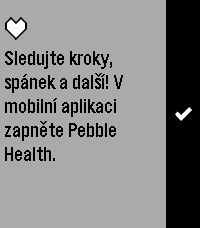
health-app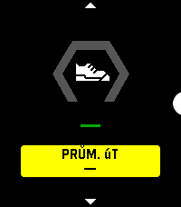
health-real-main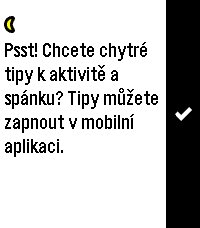
health-real-onboarding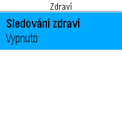
health-settingshealth-sleep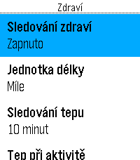
health-tracking-enabled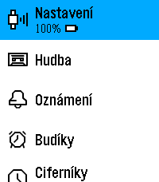
launcher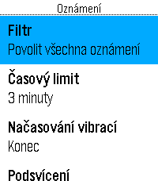
notification-settingsnotifications restart-launcher
restart-launcher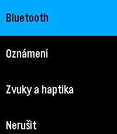
settings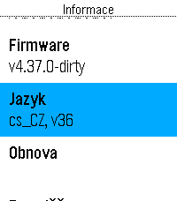
system-information-lang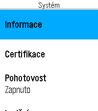
system-settings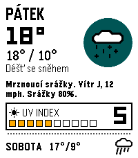
weather-days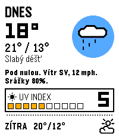
weather-detail-down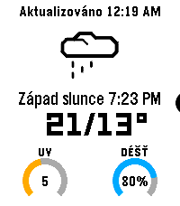
weather-expandedweather-globe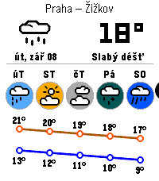
weather-mainweather-saved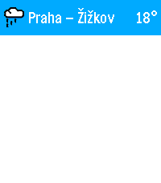
weather-saved-open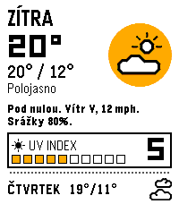
weather-tomorrow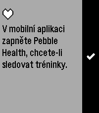
workout-disabled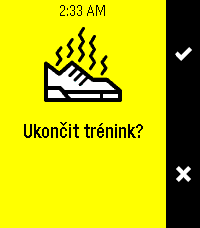
workout-end-confirmation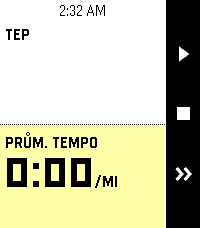
workout-pace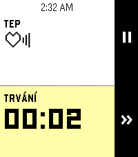
workout-running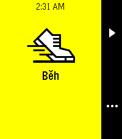
workout-startworkout-summary